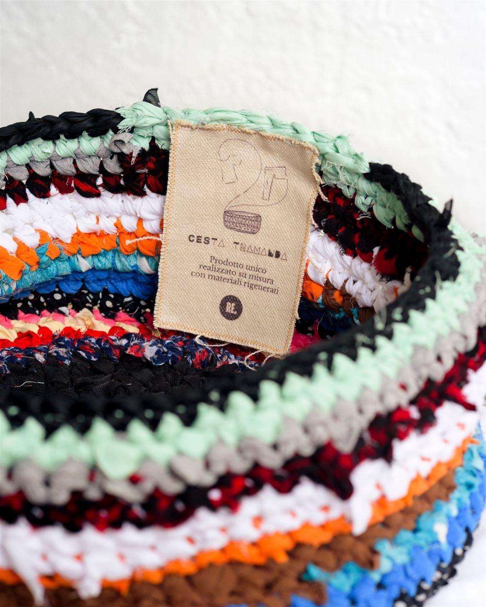
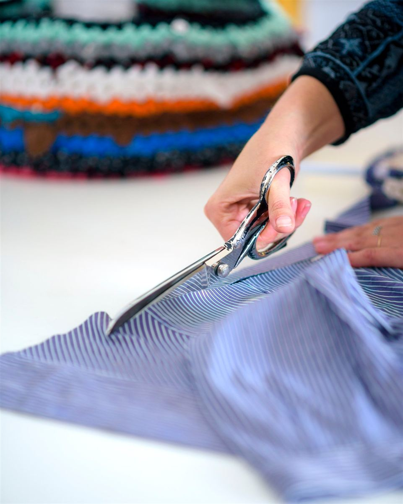
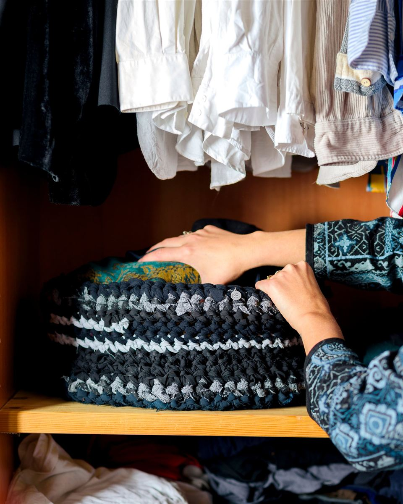

Cesta Tramanda · su richiesta
Intreccia i tuoi ricordi in una nuova forma
La Cesta Tramanda nasce dai tuoi vestiti. Quelli che non indossi più, che conservano una storia, che portano ancora il profumo delle giornate vissute. Io li raccolgo, li trasformo in fili, li intreccio con cura e li rendo un nuovo oggetto capace di custodire altri ricordi.
- Misurepiccola, media o grande
- Tecnicastrisce di tessuto all'uncinetto
- Materialei tuoi vestiti

Come funziona
Dai tuoi vestiti alla tua cesta
- Mi contatti e scegli la misura della tua cesta.
- Mi spedisci i vestiti che vuoi riciclare.
- Li taglio a strisce e li intreccio a mano, seguendo il ritmo dell'uncinetto.
- Ricevi la tua Cesta Tramanda, unica e irripetibile.


Perché si chiama così
Una cesta che tramanda
Ogni Cesta è diversa, perché diversa è la sua storia. I vestiti di un figlio cresciuto, di una nonna, di un periodo della tua vita: invece di restare chiusi in un armadio, diventano un oggetto utile e poetico per la tua casa.
È la stessa tecnica con cui trasformo i tessuti leggeri dei campionari: strisce lavorate come un unico filo, punto dopo punto.